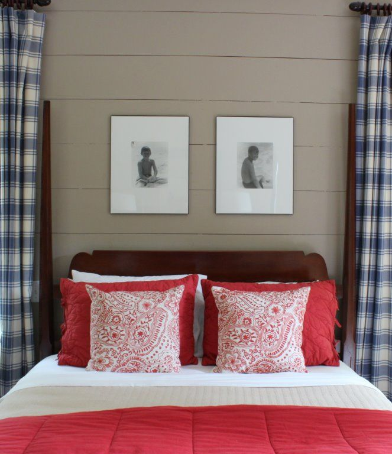
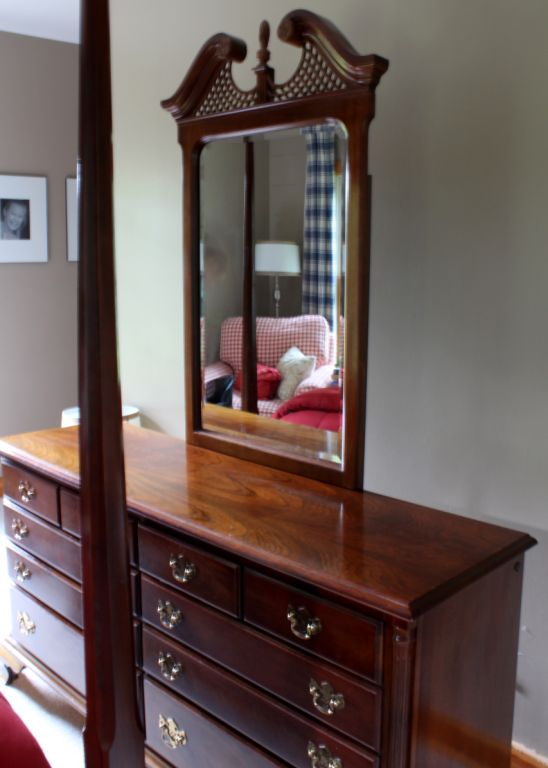

.png)
.PNG)
.PNG)
.PNG)
.PNG)
.PNG)
.JPG)
.JPG)
.PNG)
.PNG)


The domino effect is alive and well here again! Â This time it has made its way into our master bedroom. There are several projects that we are working on around here that are big budget items (along with paying for daughter’s college expenses), so changing out furniture in our bedroom just wasn’t even something to consider, but I was tired of the Queen Anne styling of some of the pieces in there…particularly this dresser and its attached mirror.

We purchased them over twenty years ago. Â So….this summer I decided that if I replaced the mirror with a more simply designed one, I could live with it. Â I shopped and shopped and finally found one at Garden Ridge. It wasn’t beautiful, but the frame style was a good shape, and the price was not bad at all.

The frame was a plastic faux wood, and I knew I wanted to paint it, but I wanted to make sure the size looked right above the dresser. Â So my husband removed the other mirror, and hung the new one.
So far so good. Â The first time I painted it, I painted it a blue that coordinated with the blue in the drapery fabric…not a good choice. Â Waaaaay too country for the room. Â So I then decided that black would be the best color since the wicker chair in that room is already painted black.
I don’t think you can really see a difference in the photographs, but it looks much better.
And then… I decided the dresser needed changing too. When I mentioned this to you a couple of months ago, several of you predicted that I would paint it – and I did think about it. Â I know that everyone in blog land paints everything, and I have painted many pieces around here, but eventually I want to change the color scheme in our master bedroom. (We’ve lived with this one well over ten years – a record for me. :)) I would like a golden yellow print in the drapes and linens, and I really like the look of stained wood with that. Â So no, I did not paint the dresser.
Instead, I updated it by changing out the hardware. Good-bye polished brass. Â Hello oil-rubbed bronze. Â I like the look much better, and it doesn’t feel so dated to me now.
And of course, if the dresser got new hardware, the highboy needed it too. (I told you the domino effect was going strong, didn’t I?) I forgot to take a “before picture” of it, so I am going to show you the photograph of  the new mirror again since the highboy is reflected in it.  See it there with its brass drawer pulls?
Removing the hardware from it was not easy. Â I did all the changing for the dresser, but my husband tackled the highboy for me.
Now you may not like the new look of it. Â It is not “historically accurate,” but I really like it because the color of the hardware blends in with the wood, and it looks more modern to me. It probably would have looked better with larger sized pulls, but this is what Lowes had in stock, and I didn’t want to spend the extra money on a special order. Â We can live with this.
And there is still more for you to see. Â Do you remember when I showed you this birthday gift I received from my in-laws?
Well, my mother-in-law searched a long time to find me a small wicker table. Â I had been looking for one for the back porch. Â She found this one at LL Bean, and it did look good on the porch, but…it really looked good in place of the small stool I had by the chair in the master bedroom. Â So…I painted it black and moved it in there.
The size really works well there.
Hopefully, that is the end of the domino effect…for awhile. 🙂
I really like how these small changes have updated our bedroom.  I was thinking about buying furniture the other day, and it is so funny to me that when I was making these purchases many years ago in my youth, I wanted furniture that looked “mature,” and now that I am …um…older, I want pieces that look younger and fresher. 🙂  Good thing I can be happy with merely changing out the hardware!
I will leave you a question to talk about today:
If you were buying bedroom furniture today, what style would you purchase? Has your taste in furniture changed over the years?
Looking forward to hearing from you!
 Linking up to….
Inspire Me Tuesday @ A Stroll Thru Life


.PNG)
Thanks, Kelly. I love that room and now have the confidence to go with it. I’m not brave enough to paint ours either, but this color scheme is beautiful.
I have an inherited antique mahogany highboy that I don’t know what to do with. Do not want to get rid of it. No room to put it in dining room, living room, master bedroom or foyer. Just moved it to the guest bedroom and bought a gray upholstered bed with silver nailhead trim. I’m not sure that’s going to work. Any ideas?
———————————————————————-
Take a look at this bedroom from an HGTV Dream Home back in 2011: http://www.hgtv.com/design/hgtv-dream-home/2011/hgtv-dream-home-2011-master-bedroom-pictures-pictures I don’t know if you want to paint it, but the look would work even if you didn’t. Just go with that color scheme in there, and I think it would look pretty. (I’m not brave enough to paint ours yet.)
Hope this helps!
Kelly
Any time I see someone update a room without painting over the gorgeous wood furniture, I am delighted, to say the least! I love the patina of your dresser and I love the pulls on it. I love everything you’ve done to that room – it looks warm, inviting and cozy. These are things I aspire to (unfortunately with 6 cats and 1 dog making my design and decorating decisions, I’m afraid I fail miserably at it) and love what you’ve done!
I love the look of the changes you made. I have a set that I purchased in 1979. I am retired and it is not worth the cost to purchase a new dresser, chest, and night stand. What kind of color is your furniture? Mine is kind of like a medium pecan and I have walnut laminate flooring. They look good together. However, the bottom of all three pieces have scrolls on them. I was thinking of taking them to a refurnishing wood place and have the scrolls sawed off so this would give the bottom a more contemporary square look. Then I would also change out the hardware. My dresser had a large miror with scrolls and little shelves on each side. I removed this mirror a couple of years ago, so all I have to do is look for a new mirroe. Do you think that by cuting the scrolls off the bottom that this would update my furniture, plus add the new hardware? Thanks!
————————————————————————–
Judy, the wood on our furniture is cherry. I think your idea of having the scrolls removed sounds like a good one if they can do it. Changing the hardware makes a really big difference. I think you have a good plan!
Kelly
What a nice face lift for your bedroom! I’m amazed how much difference the subtle changes made. I have brass pulls also on my maple bedroom furniture. Haven’t seen a wrench like the one your husband used to remove the old ones. What’s it called? I may have a “honey-do” project in mind around here soon! If I were going to change furniture, I may choose a shabby chic style that would look good in a lakeside home. Right now I’m changing out my dinning room dark furniture for a lighter wood with smaller hutch and serving buffett so there is more room for holiday meals. Something about fall that has us nesting and getting ready for cooler weather and the comfort of our homes!:)
———————————————————————-
Thank you Louvina. That hardware change did make a difference. My husband called the tool a claw nail puller. He had to find one that was thin enough to get between the nails and the other part of the handle..only it didn’t work. So I used my fingernails to pull up on the big brass part while he carefully wedged the tool underneath to carefully pry it off. We didn’t want to dent the wood. Sounds like a smart plan for your dining room. Fall must signal to us that the holidays are coming, and we have to be ready for company!
Kelly
Hi Kelly,
You’re so inspiring! We, too, have a bedroom set we’ve had forever, but just can’t buy a brand new one right now (son in college, too! ;). I’ve contemplated painting the set (husband not excited about that idea), but I’ve hesitated. I did break down and buy a pretty fabric headboard from Ballard, but maybe changing the hardware will help. Thanks for your wonderful ideas. You’re bedroom looks great!
———————————————————————
You are too kind, Lisa! I was surprised at what a difference the hardware made. A fabric headboard would certainly update a bedroom. I know we won’t be going that route here, though. The bed in our master bedroom was my wedding gift from my husband (and quite a surprise at that.)
Thank you for reading the post and commenting. 🙂
Kelly
Echoing all the positive comments, love the results from such small changes. I actually still use what had been my parents’ dining room and bedroom sets: maple and very colonial looking. Having lost some of the drawer pulls on these pieces I was thinking of replacing with what I had on the kitchen cabinets. Similar in style to the ones you used, now I know what an updated look I will have. Love, too, the wicker piece – LL Bean has some nice things for the home. And, so agree on what you said about wanting “mature” furniture earlier in life and how things have changed along the way. Keep us posted on your next decorating project!
———————————————————————-
Thank you Paula. You have kept your furniture for a long time. Glad to know I could help you visualize what different hardware would look like on your kitchen cabinets. I have been working on the boys’ room for the last two weekends, and I am finally making some progress on it.
Hope your weekend is going well.
Kelly
After 26 years, I’m still waiting to buy our first bedroom suit. We are still using the suit that was in my husbands bedroom at his parent’s house. Lol So ready for a change. Since it is still, technically, theirs I can’t even change the hardware. Like you, with 3 in college, my decor chances will have to wait a little longer. S-i-g-h I can paint walls though. Hummm…which room will be first
———————————————————————–
Good grief! Bless your heart, Jayne. That is tough (and having three in college is VERY tough.) Yes, you may paint. Go for it!!
Kelly
It’s amazing how a little paint and new hardware can make such a difference, especially a coat of black paint.
I would choose an iron canopy bed and unmatched furniture if I were to start over.
I especially like the several lines of bedroom furniture that Restoration Hardware has now. Somehow though, the bedroom is always the last room to redecorate and update! ~Delores
———————————————————————
You are so right about the bedroom getting decorated last. I guess it is because we don’t usually entertain company in there! Restoration Hardware seems to be getting the vote from a lot of people in the comments here tonight. I love all of their children’s line.
Kelly
I love how everything looks here! My bedroom furniture is unpainted, too, and very classic. I guess at this time I would still choose this same set because hubby likes it so much. My old set was whitewashed cottage and I loved that, too. xo Diana
———————————————————————-
Thank you for the compliment, Diana! How sweet that you value your husband’s preferences in furniture. He must have good taste. 🙂
Kelly
Your small changes just prove that a little ingenuity and experimentation can produce a wonderful wow factor. Your MIL nailed it with that little stool/table, too. I really love that big comfy looking red/white chair, too.
———————————————————————
Thank you so very much for your words of kindness! I am glad you enjoyed the post. Yes, I think my mother-in-law did a good job when she got me that wicker table. That big chair IS very comfortable. Everyone needs a chair and ottoman like that one.
Kelly
I love what the domino effect has done to your bedroom. It looks fresh now. Where did the stool find a new place at in your home? If I were to buy new furniture now I would design it and have our cabinet maker build it. The exception is to things like couches and upholstered furnishings of course. I have already had him make a few of my designs. I had him rework bar stools, make an entertainment center and our bedside tables.
———————————————————————
The stool has not really found a parking place yet. I have been standing on it as I have cleaned out the shelves in closets and while painting a wall. 🙂 Designing furniture is not easy. Hats off to you! We have spent hours trying to design some beds, so I know it is not easy.
Enjoy your weekend!
Kelly
Love how the simple changes updated the room! Great choice of mirror! I have my mom in law’s old cowboy not the same style you have. It’s been cherry, white and most recently a warm charcoal gray. Couldn’t figure out what to do with the pulls, but am considering ORB paint. I like their style, just not the brass.
Our bedroom is shaker – the only thing hubs and I could agree on, but I hate that it all matches! I like a “curated” look better.
———————————————————————–
I like the curated look better too. Are there other pieces in your home that you could swap around with some of your bedroom pieces so that everything does not match so much? Just an idea…
Hope you are enjoying your weekend!
Kelly
Kelly,
Love your blog!
I am wondering how the original hardware would look like painted oil rubbed bronze. What do you think about that Katrina, since there was am imprint of the old hardware anyway? Aaaannd you would have the oil rubbed bronze mirror.
DiAnne
———————————————————————–
I am happy you are enjoying the blog! Painting the old hardware might be a good idea for Katrina, DiAnne. It would certainly not “jump out at you” like the polished brass ones do. It would update it some and cover the imprint (and blend in more with the wood.) Thanks for the idea.
Kelly
I recently did the same thing, just putting new hardware on my two dressers and a desk. Kept me from having to paint both of those dressers!
———————————————————————-
Great minds think alike! Yes, this was much easier than painting those pieces. 🙂
Kelly
Enjoyed your ideas Kelly 🙂 I adore the red and white plaid chair you have in your room!
———————————————————————-
Glad you liked the updates and the chair, Lauren. It is probably THE most comfortable chair in the house…and big enough to practically sleep in!
Kelly
You really did a nice job updating without too much work and regret (later maybe). I have ALWAYS hated those brass pulls!!! I have been known to get rid of a few myself. 🙂
————————————————————————
Thank you Nancy. I guess if I hang onto the pulls in case I change my mind later, there won’t be much regret. I know if I painted the pieces there would be no going back later..so this was a “safer” change.
Kelly
Kelly,
I love that you chose not to paint the furniture – it is beautiful hardwood! The new pulls look fantastic and did a nice job of updating those pieces. Good job!
———————————————————————
I appreciate your kind words, Susan! It is amazing how much difference just the handles make, isn’t it? Details count.
Kelly
Love these ideas……now you have me thinking about how Ii can update my old bedroom furniture…..thanks :o)
———————————————————————–
I am happy you found ideas that you can use Kathleen. Good luck with your bedroom furniture projects!
Kelly
Love the changes!! But, I am wondering where you got the lovely red plaid chair!!
———————————————————————-
Glad you liked the updates, Ann! The plaid chair was one I ordered from a local furniture company a number of years ago. It was a special order item that I had in our playroom when we had a blue tattersall plaid sofa in there. It is not made any more as far as I know, and I have been unable to locate that fabric anywhere either.
Kelly
I am all to familiar with “that” domino effect. Our kitchen was one of those and since I painted the trim in there white, I felt I needed to continue and so the whole house is gradually getting all the trim painted white. And now the cabinets in there don’t look the right color and I was going to leave them alone but…..
As I was reading your post I thought new hardware would be the ticket before I even saw that you added that…good choice. I noticed the mirror change and everything is looking fresh and good. Wonderful job. Little things can make a huge impact.
———————————————————————–
Oh, Cheri, your domino effect is MUCH harder. I am glad I am not painting trim like you! That is a MAJOR job (but I do so love white trim.)
Good luck with all your projects!
Kelly
Kelly,
Love your question, after more years (than I’ll publish) of a suite of furniture similar to yours, about 6 years ago we changed out our headboard/foot board and dresser for a Restoration Hardware knock off. I love the bed because I don’t have to fool with a dust ruffle (the bed has side boards). My dust ruffles always were moving around and one side would be too long, one side too short…I’d straighten it and it would be skewed again in a month or so.
I hope you saved the hardware that was originally on your pieces…I love your new choices but it’s fun to keep those pieces just in case you change your mind in 10 years or so. 😀 I think the pieces in your bedroom look fresh and up to date. I really like the wicker table in black…so nice.
Boy, we all share this bug to change things up occasionally, don’t we? Great job, your room looks so nice.
Karen
———————————————————————–
Thank you Karen. Dust ruffles can be a pain, so that is why we just have our box springs covered in a pretty fabric. I just bought a plaid fitted sheet to cover the box springs in our sons’ room…works so much better, doesn’t it? I do still have the hardware but had planned on selling it. You are the second person to tell me to keep it all…so maybe I need to listen to you! LOL And yes we all do have the nesting bug to change things. Mine has actually slowed down some in the last few years (although my mother would probably disagree with me on that.)
Kelly
Back at the height of my country bumpkin era, I had a Shaker-style, pencil post bed that I loved. Remember those Shaker bed steps? Had ’em. All good things must come to an end, though, so when my decor morphed into its (short lived) French country phase, I sold my bed (+ steps!) NOW Pottery Barn + Restoration Hardware have the coolest pencil post beds, ever, + I wish I had my old one back!
KAY @ redbirdv.wordpress.com
———————————————————————
I do remember those steps. I wanted them but never had any, and my sister had a shaker style pencil post bed. Isn’t it crazy how things go in cycles? You can just think that you were waaaay ahead of Pottery Barn and Restoration Hardware. 🙂
Kelly
I love classic pieces… they stand the test of time and you updated yours beautifully with new hardware. My master bedroom is a hot mess and you have made me want to tackle it! I keep putting it off because it’s going to be quite a project. By the way, love the way you’ve displayed your photographs with the black frames and acrylic stands!
————————————————————————
Thank you, Holly, for your very sweet comment. I am tackling the “hot mess” of our boys’ room, and like you, I have put it off and put it off because it was just so bad. Last weekend I cleaned and organized it. That always helps to get me motivated. This week is on to more decorative things (making drapes). Good luck with your bedroom!
Kelly
Every thing looks great Kelly. You got an updated look with out painting your cherry furniture.I still love cherry but when I got new living room furniture I went with the Bob Timberlake style. We love it. Not as formal as We had before. I have bedroom furniture very much like yours but we still like it.
———————————————————————
Yarlette, the Bob Timberlake furniture is wonderful. It is casual but classic at the same time, and I love the finish on those pieces. Our buffet in the foyer is a Timberlake piece. I told my husband I wanted a “Bob Timberlake finish” on the beds he is currently building. Not sure which stain that is, but we are going to experiment to see what we can come up with. 🙂
Kelly
It must be that 20 + years of living with the same furniture that gets to all of us. I like your changes and I love that high boy.
I was married in 1983 and primitive and country was big. We bought our bedroom set from Ethan Allen and it is no longer manufactured It was the country craftsman collection. I still like it, but as you know pine is soft so it shows every ding and scratch. I have considered painting it but then I get tired thinking of all the work involved. If I were buying furniture today, I would get the Quincy bed by Ethan Allen.
I am in the market for new window treatments for our bedroom, and paint.
———————————————————————
We married in 1985, so I know exactly what you mean about the primitive furniture. I dreamed of furniture from those beautiful Ethan Allen catalogs back then! And that Quincy bed?!!!!!! Oh my gosh. That is the bed I would buy now too. Love it!! I have spent months looking for two queen beds for the boys’ room, and today we finally just bought lumber for them, and my husband is outside working on building them now. I would have loved two Quincy beds, but the price was more than our budget. These beds will be much simpler than the Quincy beds. Maybe when he retires and has more time, he can build us a Quincy bed. 🙂
Kelly
Nice changes, Kelly. The black mirror and drawer pull changes really did update the look. I love your bedroom.
———————————————————————-
Thank you Kim. Have fun on your trip! And by the way, I love the new lantern over your table. Perfect color! (especially with the yellow.)
Kelly
Does it surprise you to know that I have the same bedroom suite AND the high boy? I am sure it does not! You did keep the hardware you took off just in case you want to change it back someday, didn’t you? You were brave to change that hardware out. I did change the drawer pulls in my kitchen to the same ones you used in your bedroom…only in brushed nickel. (That was a huge change.)
———————————————————————
Nope, doesn’t surprise me at all, Kathy! 🙂 I still have the hardware, but I am really thinking of selling it…bad idea? I can’t believe I would ever want them on it again, but of course who knows…. I am not a keeper of much of anything. But my husband makes up for my lack of this trait! This is one area where he and I are total opposites. I am sure he would want to keep the hardware. (So it will probably be safe with him.)
Kelly
p.s. I want to change the kitchen hardware too!
My bedroom furniture is just yours and it is 25 years old. It is made by American Drew and I quite like it. I do really like painted furniture but I feel that would “flow” with the rest of the house therefore, I am not changing it. I much prefer not the matchy look!
———————————————————————
It is so funny that so many of us have similar bedroom furniture! I prefer the collected look over the matchy look too, Anita. I am wanting to change out the hardware on the boys’ dresser now, and my first instinct was to go with the oil rubbed bronze in there. I had to stop myself from doing it though because I was afraid I would end up doing the whole house with matching hardware! I think we might have to go with brushed nickel in there instead.
Kelly
Beautiful Kelly – you have such timeless and classic taste!
———————————————————————
Thank you Sarah! Unfortunately, I didn’t think the hardware was timeless. LOL
Kelly
I love the changes..isn’t funny how things and styles we knew we would always love start to become stale eventually…..of course now that I think about it…. I still love all the Windsor chairs I have bought over the years…but you know what I mean. The new mirror and drawer pulls make such a difference. Now,I LOVE to paint furniture, but it would have been a shame to paint over the dresser and highboy.Your bedroom still has a classic elegance, but with a clean, more modern twist.
———————————————————————-
Thank you for the compliment on the changes, Martha. Stale…that is a good word for it. And the opposite of that would be fresh! We want a fresh new look. I love Windsor chairs too. (They don’t have any hardware on them. LOL) BUT I know I would paint them…and probably red. 🙂
Kelly
Kelly…I have a bedroom suite very similar to yours and bought about 25 years ago. I took off the mirror and replaced it with a round mirror from Kirklands. I love how it updated the room but now that I have seen your replaced hardware, I may have to take that on as well!! One of my friends could not believe that I would trade mirrors on the dresser but hey…it made me feel so much better!!
———————————————————————-
This style of furniture must have been THE style to buy 20 years ago since so many of us house lovers have it in our bedrooms now. 🙂 I think your changing out the mirror was a smart thing to do…much smarter than going out and buying new furniture. And I know exactly what you mean about it making you feel so much better.
Kelly
OM goodness….did this post EVER hit home!!!!I have almost the EXACT same dresser, mirror and instead of a highboy the chest that matches! Is yours by American Drew? We have had the set for 29 years! Well, knowing we were moving I racked my brain about how to economically change our bedroom furniture. To make a long story short….. the mirror (that I was sick of looking at) is under a twin bed in another room and I am searching for an updated mirror…we found a really cool brass bed at Habitat and spray painted it oil rubbed bronze(love it!)….. and currently one of the draw pulls on the chest has been changed to same Lowe’s pull you used! Unfortunately, when we took off the old pull there was an imprint of the old pull that shows even with the new pull on. Mmmmm…gotta figure what to do about that! Love what you have done!
———————————————————————
I do believe the dresser is American Drew. I have no idea about the highboy since I bought it when I was a teenager (babysitting money :)) The dark area was there under our hardware too when we pulled it off the dresser (but not the highboy.) The new handles cover it well enough that it doesn’t bother me, but I know larger handles are made. You might check around to see if you can find them, and they would cover it better.
Glad you liked all the changes!
Kelly
I love the addition of the black and the new hardware, totally changes the look and feel of the pieces. Be sure to link up to Inspire Me going on now. Hugs, Marty
———————————————————————-
It did change the look a bunch! I’m glad you liked it Marty. Thank you for the reminder to link up to your party!
Kelly